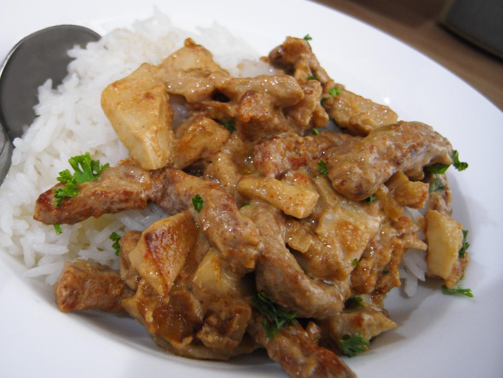

Image Credit
Beef Stroganoff
Beef Stroganoff is a classic Russian dish featuring tender beef strips in a creamy mushroom sauce, traditionally served over egg noodles or rice.
Cook time
30 minutes
Calories
420
Instructions
- Slice beef into thin strips.
- Sauté beef in a hot pan until browned.
- Remove beef and set aside.
- In the same pan, sauté onions and mushrooms until tender.
- Add flour to the pan and cook for 1 minute.
- Stir in beef broth and bring to a simmer.
- Return beef to the pan and cook until heated through.
- Stir in sour cream and cook until the sauce thickens.
- Season with salt and pepper to taste.
- Serve over egg noodles or rice.
Recipe Credits: Link